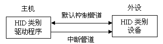
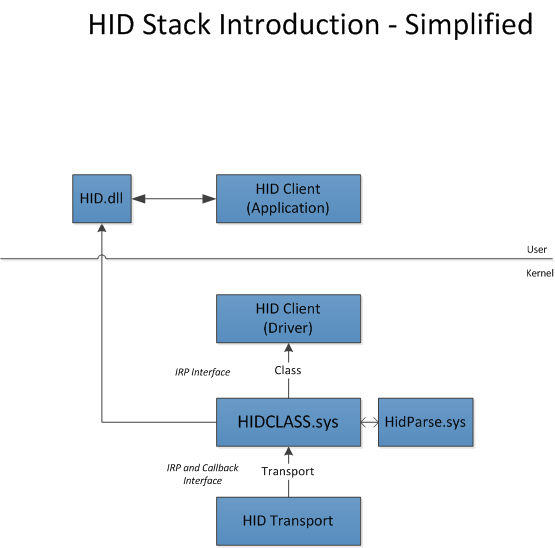
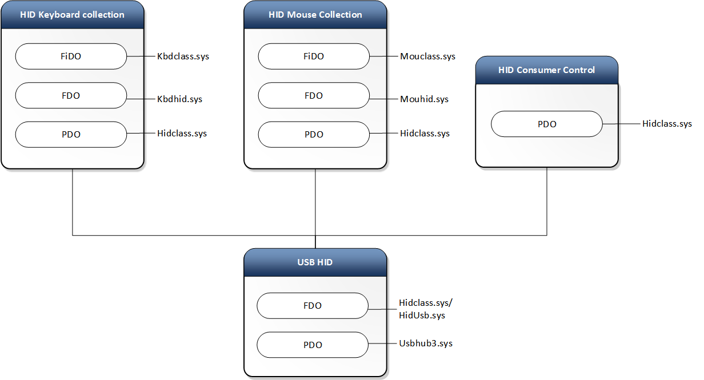
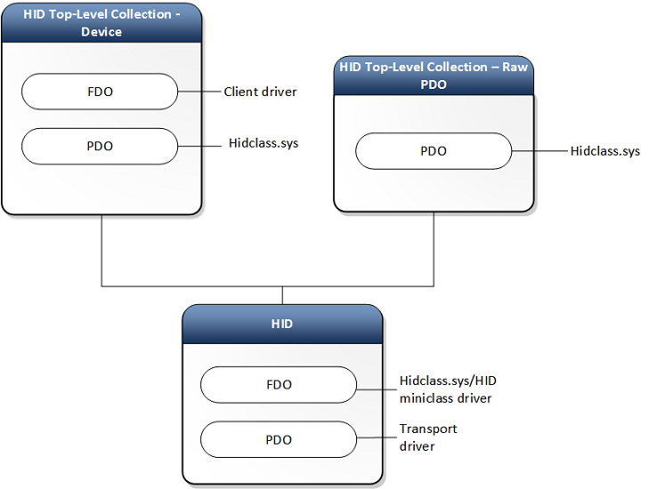
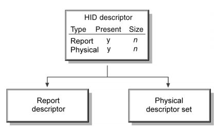
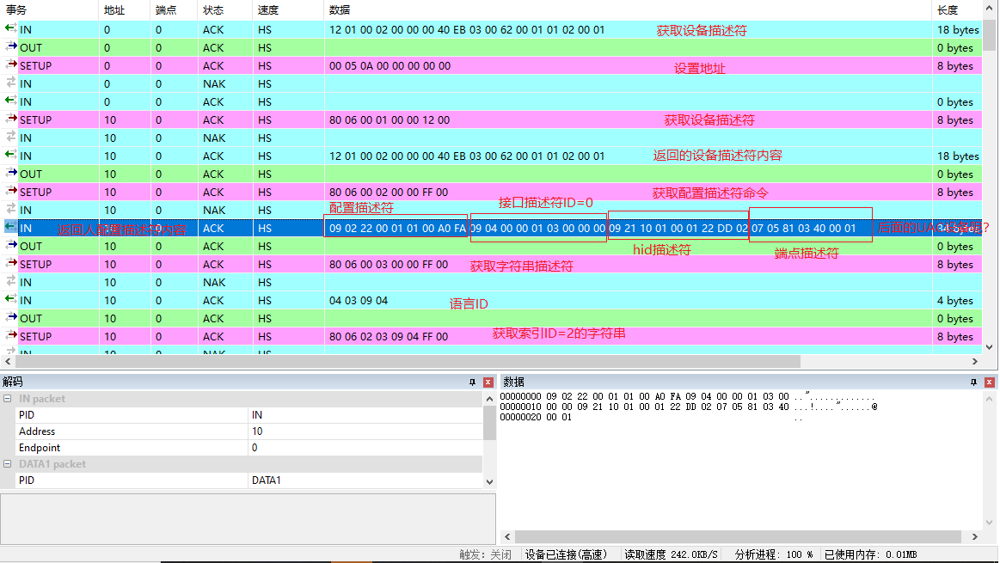

USB-HID 协议
一、简介
HID（Human Interface Device，人机接口设备）是 USB 设备中常用的设备类型，是直接与人交互的 USB 设备，例如键盘、鼠标与游戏杆等。在 USB 设备中，HID 设备的成本较低。另外，HID 设备并不一定要有人机交互功能，只要符合 HID 类别规范的设备都是 HID 设备。
Wndows 操作系统最先支持的 HID 设备。 在 Windows 98 以及后来的版本中内置有 HID 设备的驱动程序。 也就是说，用户无需去开发驱动程序，，应用程序可以直接使用这些驱动程序来与设备通信。
在设计一个 USB 接口的计算机外部设备时，如果 HID 类型的设备可以满足需要，可以将其设计为 HID 类型设备，这样可以省去比较复杂的 USB 驱动程序的编写，直接利用 Windows 操作系统对标准的 HID 类型 USB 设备的支持。
1、HID 设备特点
交换的数据储存在称为报表（
Report）的结构内，设备的固件必须支持 HlD 报表的格式。主机通过控制和中断传输中的传送和请求报表来传送和接收数据。报表的格式非常灵活。每一笔事务可以携带小量或中量的数据。
低速设备每一笔事务最大是 8B,一个报表可以使用多笔事务
全速设备每一笔事务最大是 64B
高速设备每一笔事务最大是 1024B设备可以在未预期的时间传送信息给主机，例如键盘的按键或是鼠标的移动。所以主机会定时轮询设备，以取得最新的数据。
HID 设备的最大传输速度有限制。主机可以保证低速的中断端点每 10ms 内最多 1 笔事务，每一秒最多是 800B（8×100）。保证全速端点每 1ms 一笔事务，每一秒最多是 64000B（64×1000）。保证高速端点每 125us 三笔事务，每一秒最多是24.576MB（1024×8000×3）。
HID 设备没有保证的传输速率。如果设备是设置在 10ms 的时距，事务之间的时间可能等于或小于 10ms。除非设备是设置在全速时在每个帧传输数据，或是在高速时在每个微帧传输数据。这是最快的轮询速率，所以端点可以保证有正确的带宽可供使用。
HID 设备除了传送数据给主机外，它也会从主机接收数据。只要能够符合 HlD 类别规范的设备都可以是 HID 设备。
2、HID 设备的硬件要求
HID 接口必须符合 Device Class Definition for Human interface Devices 规范内所定义的 HID 类别的需求。在此文件内描述了所需的描述符、传输的频率以及传输的类型等。为了符合规范，HID 接口的端点与描述符都必须符合数个要求。

所有的 HID 传输都是使用默认控制管道或是一个中断管道，HID 设备必须有一个中断输入端点来传送数据到主机，中断输出端点则不是必需的。
| 传输类型 | 数据来源 | 数据类型 | 是否需要管道 |
|---|---|---|---|
| 控制 | 设备（输入） | 没有严格时间限制的数据 | 是 |
| 主机（输出） | 没有严格时间限制的数据 或是没有中断输出管道时的任何数据 | ||
| 中断 | 设备（输入） | 定时或低延迟的数据 | 是 |
| 主机（输出） | 定时或低延迟的数据 |
主机与设备之间所交换的数据，可以分成两种类型：
- 低延迟的数据，必须尽快地到达目的；
- 配置或其他的数据，没有严格时间限制的需求。
中断管道是控制管道之外的另一种数据交换的方式，特别适合使用在接收端需要定时或是尽可能及时收到数据的时候。中断输入管道携带数据到主机，中断输出管道则是携带数据到设备。在总线忙的时候，控制管道可能会被延迟，而中断管道保证会有可得到的带宽。HID 不需要一定有中断输出管道。如果没有中断输出管道，主机会在控制管道上使用 HID 设备特有的 Set_Report 请求来传送所有的报表。
3、HID 固件的要求
主机的驱动程序要与 HID 设备通信，设备的固件必须符合下列需求：
- 设备的描述符必须识别该设备包含有 HID 接口。
- 除了默认控制管道外，固件必须另外支持一个中断输入管道。
- 固件必须包含一个报表描述符来定义要传送与接收的设备数据
如果要传送数据，固件必须支持 Get_Report 控制传输与中断输入传输。如果要接收数据，固件必须支持 Set_Report控制传输与选择性的中断输出传输。
所有的 HID 数据都必须使用定义过的报表格式来定义报表中数据的大小与内容。设备可以支持一个或多个报表。在固件中的一个报表描述符用来描述此报表，以及如何使用报表数据的信息。
在每一个报表中的一个数值，定义此报表是一个输入（Input）、输出（Output）或是特征（Feature）报表。主机在输入报表中接收数据，在输出报表中传送数据，特征报表可以在任何方向传递。
Windows 98 以及后来版本的 HID 驱动程序使用中断传输来传递输入报表。输出报表的传输类型要根据设备支持的端点与 Windows 的版本而定。Windows 98 Gold 只符合 HID 1.0 规范，它的 HID 驱动程序使用控制传输来传递输出报表。Windows 98 SE、Wndows 2000 符合 HID 1.1 规范，HID 驱动程序在有中断输出端点时使用中断传输，否则使用控制传输来传递输出报表。特征报表都是使用控制传输。
二、HID 体系结构
Windows 中的 HID 驱动程序堆栈的体系结构基于名为 hidclass.sys 的类驱动程序。 客户端和传输微型驱动程序从用户模式或内核模式下访问的类驱动程序。
在系统提供的 HID 类驱动程序是 WDM 功能驱动程序和总线驱动程序 HID 设备安装程序类（HIDClass）。HID 类驱动程序的可执行组件是 hidclass.sys。HID 类驱动程序是 HID 客户端和各种不同的传输在一起。 这允许隐藏客户端传输以独立方式编写。 此级别的抽象允许客户端可以继续使用 （很少或者不做任何修改） 时的新标准，或引入了第三方传输。
下面是简化的 hid 驱动程序堆栈，显示隐藏客户端 的 hid 的类驱动程序和 hid 的传输组件：

- HID 客户端 – 标识 Windows 和第三方客户端以及其接口。
- HID 的类驱动程序 - hidclass.sys可执行文件。
- HID 的传输微型驱动程序的标识 Windows 和第三方传输和及其接口。
下面是泛型的 HID 客户端和传输的设备堆栈关系图。

下面是另一个设备堆栈关系图显示通过 USB 的 HID 键盘和鼠标集合。

三、HID 描述符
USB 设备的信息存储在 USB 设备的固件中，当 USB 设备接入 PC 机启动后，主机会通过 USB 的标准请求对存储在 USB 设备的固件信息进行读取分析。这些存储的信息主要包括各种 USB 描述符信息，如设备描述符，配置描述符，接口描述符、端点描述符和字符串描述符等。
USB 设备的功能按接口来进行分类的，一个接口就代表着 USB 设备的一种功能，其接口下的端点用于实现该接口下的数据通讯功能。由于 USB HID 设备的功能比较单一，所以通过接口描述符的类型用于标识该“设备功能”设备类型。所以一个 USB 设备如果包括多个接口，这些多个接口可以实现多个设备功能。
由于 USB HID 设备的接口中标识了设备类型，但同一种设备类型因为厂商或实现机制的原因，数据格式不统一，所以虽然是同一种设备，但固件上报的数据格式甚至长度可能五花八门，所以通过报告描述符来实现使 USB 主机端识别并解析这些数据。
USB HID描述符包括两种报表描述符，分别为物理描述符集合和报告描术符，也叫报表描述符。
- 物理描述符集合是可选的描述符，提供用于激活设备控件的人体一个或多个部分的信息。
- 报告描述符用于描述符 USB HID 设备上报的数据信息格式。

报告描述符的内容:
- 确定将输入路由到何处，例如，将输入发送到鼠标或操纵杆 API。
- 允许软件为输入分配功能，例如，使用操纵杆输入定位油箱
- 通过检查项目（统称为报告描述符），HID 类驱动程序能够确定来自 HID 类设备的数据报告的大小和组成。
1、HID 描述符结构
对于 HID 设备，其接口描述符下有一个 HID 描述符，HID 描述符中含有其报告描述符的相关信息，如报告描述符的类型和长度。
HID 描述符的主要作用是用来识别 HID 通信所使用的额外描述符。下表是 HID 描述符结构。
| 偏移量 | 字段 | 字节数 | 数值类型 | 说明 |
|---|---|---|---|---|
| 0 | bLength | 1 | Numeric | 描述符字节数 |
| 1 | bDescriptorType | 1 | Constant | 0x21 = HID 描述符 |
| 2 | bcdHID | 2 | Numeric | HID规范版本号（BCD） |
| 4 | bCountryCode | 1 | Numeric | 硬件设备所在国家的国家代码 |
| 5 | bNumDescriptors | 1 | Numeric | 类别描述符数目（至少有一个报表描述符） |
| 6 | 【bDescriptorType】 | 1 | Constant | 该类别描述符的类型 |
| 7 | 【wDescriptorLength】 | 2 | Numeric | 该类别描述符的总长度 |
bcdHID：设备与其描述符所遵循的 HID 规范的版本号码，此数值是 4 个 16 进位的 BCD 格式字符。例如版本 1.1 的bcdHID是 0110h。bCountryCode：国家的识别码。如果不说明，该字段为 0。bDescriptorType：HID 描述符附属的描述符的类型（报表或实体）。每一个 HID 都必须至少支持一个报表描述符。一个接口可以支持多个报表描述符，以及一个或多个实体描述符。
HID 描述符的偏移量为 6 和 7 的 bDescriptorType 和 wDescriptorLength 可以重复存在多个。

2、HID 设备描述符关系
HID 设备除了支持 USB 设备的 5 种标准描述符之外，还支持 HID 设备特有的 3 种描述符。这些描述符是：
- USB 标准描述符：设备描述符、配置描述符、接口描述符、端点描述符和字符串描述符
- HID 特有的描述符：HID描述符、报表描述符（Report）和实体描述符（Physical）
从描述符的关联关系看，HID 描述符是关联于接口。所以如果一个 HID 设备有 2 个端点，设备不需要每个端点有一个 HID 描述符。

从前面的USB描述符可以看出一个规律，描述符的第一、二字节分别是描述符的长度和类型，描述符的类型字段（bDescriptorType）表明描述符的种类。